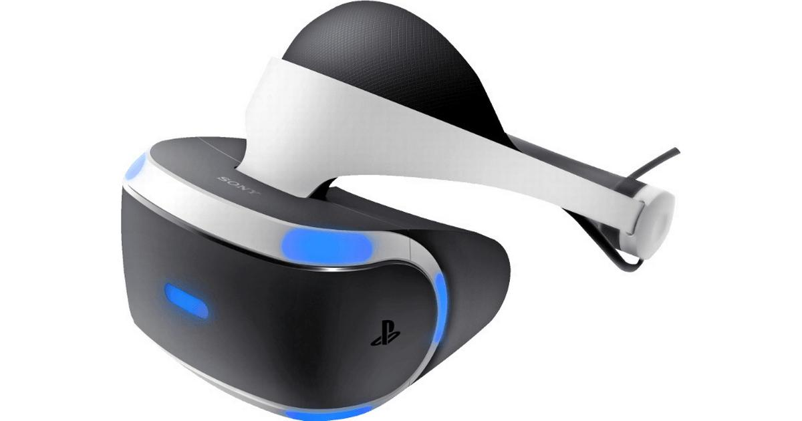

Virtual Reality’s most immediately-recognizable component is the head-mounted display (HMD). Human beings are visual creatures, and display technology is often the single biggest difference between immersive Virtual Reality systems and traditional user interfaces. For instance, CAVE automatic virtual environments actively display virtual content onto room-sized screens. While they are fun for people in universities and big labs, consumer and industrial wearables are the wild west.
With a multiplicity of emerging hardware and software options, the future of wearables is unfolding but yet unknown. Concepts such as the HTC Vive Pro Eye, Oculus Quest and Playstation VR are leading the
way, but there are also players like Google, Apple, Samsung, Lenovo and others who may surprise the industry with new levels of immersion and usability. Whomever comes out ahead, the simplicity of buying
a helmet-sized device that can work in a living-room, office, or factory floor has made HMDs center stage when it comes to Virtual Reality technologies.
Originally funded as a Kickstarter project in 2012, and engineered with the help of John Carmack (founder of Id Software, of Doom and Quake fame), Oculus became the early leader in Virtual Reality hardware
for video games. Facebook bought Oculus in 2014, and brought the company’s high-end VR HMD to market for consumers. More recently, Oculus has seen success with the lower-price, lower-powered Oculus
Go, and 2019 will see the release of multiple new iterations on the hardware, including the tethered Rift S and the stand-alone Oculus Quest.
So which one should you buy?
The HTC Vive has been one of the best VR HMDs on the market since its consumer release back in 2016. Manufactured by HTC, the Vive was the first VR HMD to support SteamVR. The Vive has been locked in
fierce competition with the Oculus Rift since release, as both headsets aimed at the same top end of the VR enthusiast market. The Vive has proven itself a durable workhorse for enterprise solutions, while
also delivering one of the best consumer VR experiences available. The Vive was first released back in 2016, and has gone through several iterations, with the addition of a wireless module.
Sony’s entry into the market is the lowest powered of the three best-selling VR HMDs, but the PSVR has a big advantage over the Rift and Vive. Because it’s tethered to the Playstation 4 gaming system, there
was an enormous, pre-existing user base of 10s of millions of gamers, many of whom were eager to try their hand at VR. Because that user base already had a PS4, Sony’s customers didn’t have to purchase/upgrade their computer hardware, making the PSVR the most “affordable” of the high-end HMDs. As such, the PSVR is the best-selling Virtual Reality HMD on the market, moving over 4 million units since its initial
release, and showing that, if nothing else, VR gaming is here to stay.
Oculus Quest
The Oculus Quest VR headset combines a
wire-free experience with six-degrees-of-freedom motion tracking and two
controllers, all without the need for a separate computer to use it.

Sony PlayStation VR
The Sony PlayStation VR headset brings
powerful, compelling virtual reality,
with motion control support, to the
PlayStation 4.
Oculus Quest 2
The Oculus Quest 2 improves on nearly
everything from the original at a more
affordable price, making it the best $300
VR headset for newbies and experienced
users alike.
HTC Vive Cosmos
The HTC Vive Cosmos VR headset is a technically impressive improvement on the
original Vive, but it's very expensive and
you still have to deal with a cable.
Oculus Rift S
The Oculus Rift S improves on the previous Rift headset with a sharper screen
and a camera array that doesn't require
external sensors.